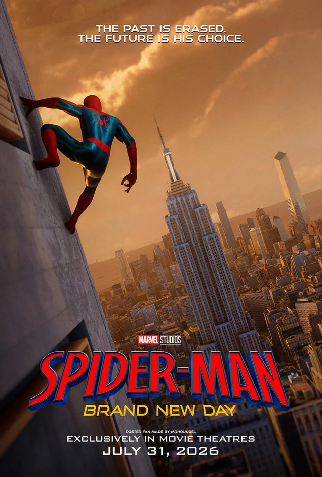
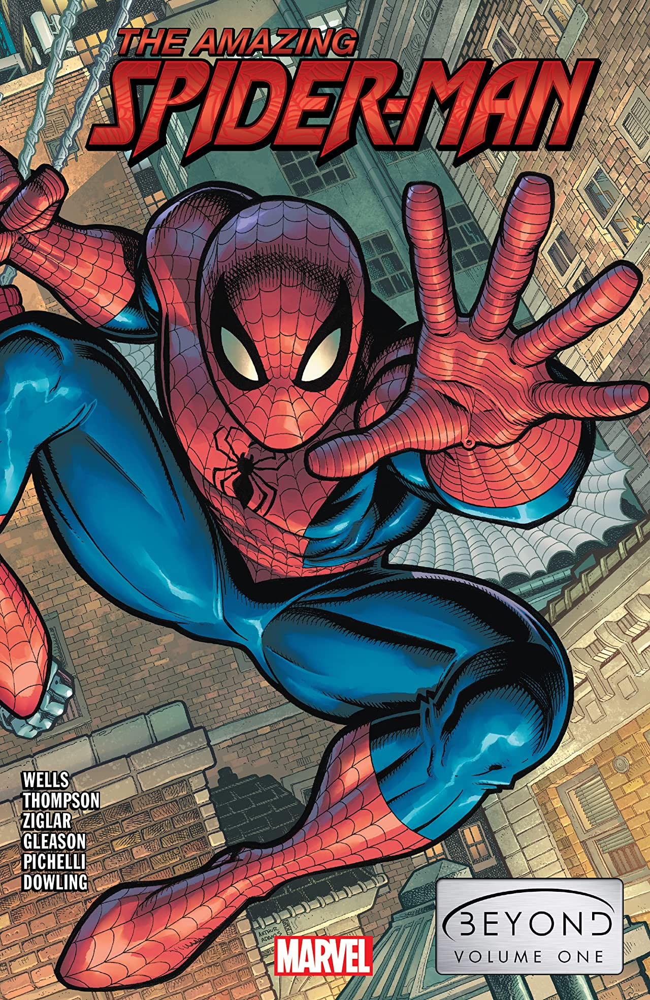
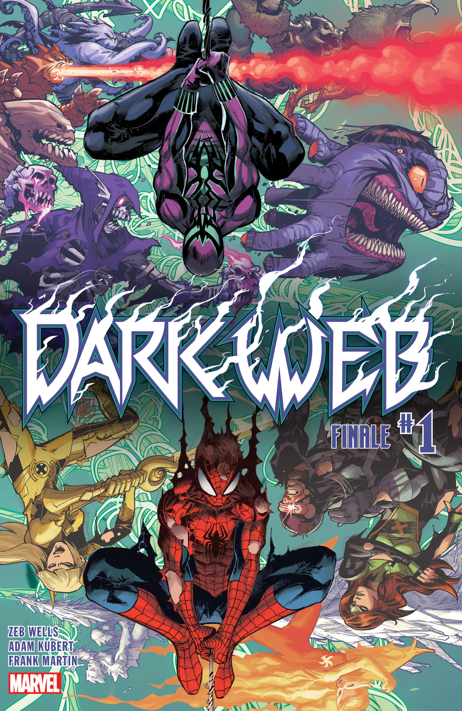
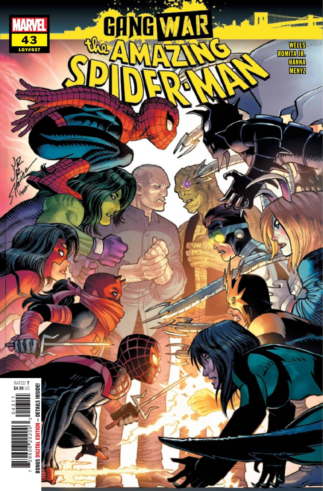
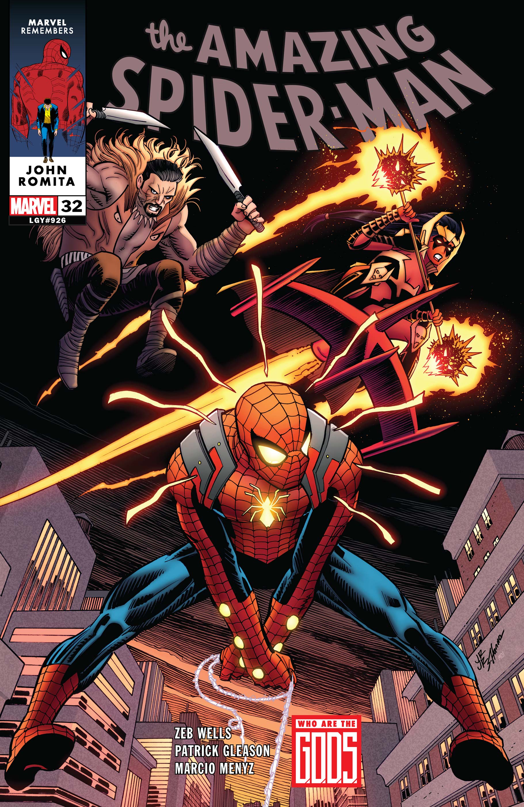
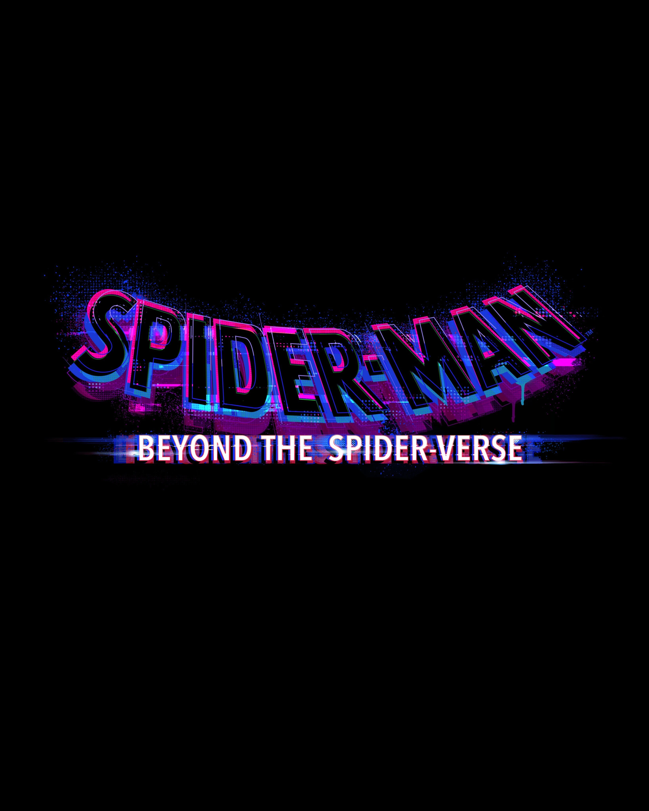

The 2020s redefine Spider-Man across comics, films, animation, and video games.
From No Way Home breaking reality open,
to Ben Reilly’s return, to modern events like Dark Web and Gang War,
this decade pushes Spider-Man’s world to its biggest scale ever.
Milestones
The defining Spider-Man stories of the 2020s — reality breaks,
massive crossovers, legacy heroes rising, and multiverse-shifting hits.
Years2020–2029
Key creatorsNick Spencer, Zeb Wells, Patrick Gleason, Cody Ziglar
The multiverse cracks open, uniting Tom Holland, Andrew Garfield,
and Tobey Maguire in a crossover that becomes a global phenomenon.

Film · MCU
Spider-Man: Brand New Day (2026)
Release date: July 31, 2026 · Starring: Tom Holland, Zendaya
The start of a new MCU trilogy. After the world forgets Peter Parker’s identity,
Peter leans fully into being Spider-Man with no civilian safety net, exploring
what it means to be a hero when you’ve truly lost everything else.
TV · Animation
Your Friendly Neighborhood Spider-Man (2025– )
Disney+ animated series · Showrunner: Jeff Trammell
A cel-shaded origin-era series set in an alternate MCU timeline where Norman
Osborn mentors Peter instead of Tony Stark. The show leans into early Ditko/Romita
vibes and has already been renewed for multiple seasons with more Spider-variants
on the way.

Comics · Legacy
Amazing Spider-Man: Beyond (2021–2022)
Ben Reilly steps back into the role of Spider-Man,
backed by the shady Beyond Corporation.
His new identity crisis sets up major consequences for Peter and Ben.

Event
Dark Web (2022–2023)
Ben Reilly becomes Chasm and teams with Madelyne Pryor,
launching a surreal demonic invasion of New York.
Film · Animation
Across the Spider-Verse (2023)
An artistic, emotional expansion of the Spider-Verse.
Introduces Spider-Man 2099, Spider-Punk, and hundreds of variants.
Video Game
Marvel’s Spider-Man 2 (2023)
Peter and Miles face Kraven and Venom in one of the most
cinematic superhero games ever created.

Event
Gang War (2024)
A street-level war erupts between NYC’s crime families,
forcing Peter, Miles, Spider-Woman, and others to form
new alliances to save the city.

Comics
Amazing Spider-Man (2022–present) – Zeb Wells
A controversial run exploring mystery arcs, broken relationships,
and redefining Peter’s personal life and hero role.

Film · Upcoming
Beyond the Spider-Verse (TBA)
The conclusion to Miles Morales’ animated trilogy,
set to resolve cliffhangers and expand the multiverse further.